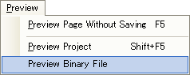
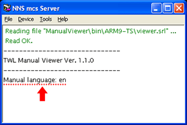

TWL-ManualEditor では、プロジェクトのバイナリ出力で出力された説明書のバイナリファイルを読み込んでプレビューし、内容を確認できます。
注意）読み込めるファイル名は、バイナリファイル出力時の名前 manpages_narc.blz に限られますので、ファイル名を変更すると読み込めません。
メインメニューの[プレビュー]→[バイナリファイルをプレビュー]で、ファイル選択ダイアログが表示されます。
環境設定で指定したプレビュー先へ、説明書のバイナリファイルがプレビューされます。
複数言語を含む説明書のバイナリファイルの場合、ビューアの起動時の入力で言語を切り替えて表示できます。
メインメニューの[プレビュー]→[バイナリファイルをプレビュー]で複数言語を含む説明書のバイナリファイルをプレビューしビューアを起動します。
ビューア起動、もしくは「説明書を閉じる」ボタンを押して再起動中に、Ｂボタンを押し続ける事で表示言語を切り替えます。
入力に成功するとNNS mcs サーバのウィンドウで、選択された言語が表記されます。

２から３の操作を繰り返す事で、説明書のバイナリファイルに含まれる全ての言語を順番に表示します。
| 各リージョンで、表示される言語の順番以下の表の順番です。 | ||||||||||||||||||||||||||||||||||
|
||||||||||||||||||||||||||||||||||
| ※追加言語が複数ある場合は、言語フォルダのファイル名の順番になります。 ※最初に表示される言語は本体で設定されている言語ですが、本体で設定している言語が説明書のバイナリファイルに含まれていない場合は、ファイルに含まれる表中の言語の１番上の言語が表示されます。 |